分治算法
分治（divide and conquer），全称分而治之，是一种非常重要且常见的算法策略。分治通常基于递归实现，包括“分”和“治”两个步骤。
- 分（划分阶段）：递归地将原问题分解为两个或多个子问题，直至到达最小子问题时终止。
- 治（合并阶段）：从已知解的最小子问题开始，从底至顶地将子问题的解进行合并，从而构建出原问题的解。
如图 12-1 所示，“归并排序”是分治策略的典型应用之一。
- 分：递归地将原数组（原问题）划分为两个子数组（子问题），直到子数组只剩一个元素（最小子问题）。
- 治：从底至顶地将有序的子数组（子问题的解）进行合并，从而得到有序的原数组（原问题的解）。
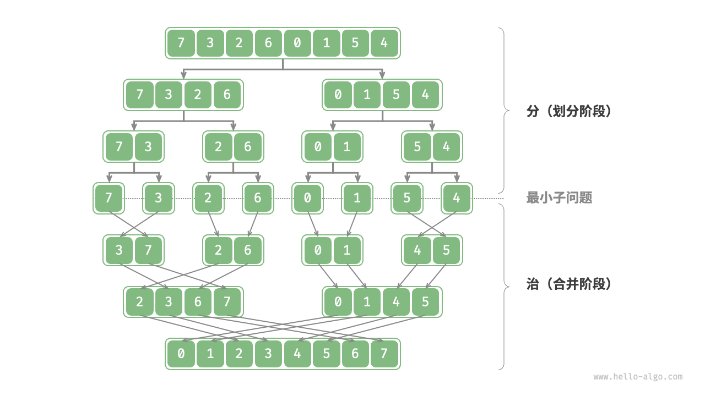
如何判断分治问题
一个问题是否适合使用分治解决，通常可以参考以下几个判断依据。
- 问题可以分解：原问题可以分解成规模更小、类似的子问题，以及能够以相同方式递归地进行划分。
- 子问题是独立的：子问题之间没有重叠，互不依赖，可以独立解决。
- 子问题的解可以合并：原问题的解通过合并子问题的解得来。
显然，归并排序满足以上三个判断依据。
- 问题可以分解：递归地将数组（原问题）划分为两个子数组（子问题）。
- 子问题是独立的：每个子数组都可以独立地进行排序（子问题可以独立进行求解）。
- 子问题的解可以合并：两个有序子数组（子问题的解）可以合并为一个有序数组（原问题的解）。
通过分治提升效率
分治不仅可以有效地解决算法问题，往往还可以提升算法效率。在排序算法中，快速排序、归并排序、堆排序相较于选择、冒泡、插入排序更快，就是因为它们应用了分治策略。
那么，我们不禁发问：为什么分治可以提升算法效率，其底层逻辑是什么？换句话说，将大问题分解为多个子问题、解决子问题、将子问题的解合并为原问题的解，这几步的效率为什么比直接解决原问题的效率更高？这个问题可以从操作数量和并行计算两方面来讨论。
操作数量优化
以“冒泡排序”为例，其处理一个长度为 𝑛 的数组需要 $𝑂(𝑛^2)$ 时间。假设我们按照图 12-2 所示的方式，将数组从中点处分为两个子数组，则划分需要 𝑂(𝑛) 时间，排序每个子数组需要 $𝑂((𝑛/2)^2)$ 时间，合并两个子数组需要 𝑂(𝑛) 时间，总体时间复杂度为：
$$
O(n + (\frac{n}{2})^2 \times 2 + n) = O(\frac{n^2}{2} + 2n)
$$

接下来，我们计算以下不等式，其左边和右边分别为划分前和划分后的操作总数：
$$ \begin{aligned} n^2 & > \frac{n^2}{2} + 2n \newline n^2 - \frac{n^2}{2} - 2n & > 0 \newline n(n - 4) & > 0 \end{aligned} $$
这意味着当 $n > 4$ 时，划分后的操作数量更少，排序效率应该更高。请注意，划分后的时间复杂度仍然是平方阶 $O(n^2)$ ，只是复杂度中的常数项变小了。
进一步想，如果我们把子数组不断地再从中点处划分为两个子数组，直至子数组只剩一个元素时停止划分呢？这种思路实际上就是“归并排序”，时间复杂度为 $O(n \log n)$ 。
再思考，如果我们多设置几个划分点，将原数组平均划分为 $k$ 个子数组呢？这种情况与“桶排序”非常类似，它非常适合排序海量数据，理论上时间复杂度可以达到 $O(n + k)$ 。
并行计算优化
我们知道，分治生成的子问题是相互独立的，因此通常可以并行解决。也就是说，分治不仅可以降低算法的时间复杂度，还有利于操作系统的并行优化。
并行优化在多核或多处理器的环境中尤其有效，因为系统可以同时处理多个子问题，更加充分地利用计算资源，从而显著减少总体的运行时间。
比如在图 12-3 所示的“桶排序”中，我们将海量的数据平均分配到各个桶中，则可将所有桶的排序任务分散到各个计算单元，完成后再合并结果。
分治常见应用
一方面，分治可以用来解决许多经典算法问题。
- 寻找最近点对：该算法首先将点集分成两部分，然后分别找出两部分中的最近点对，最后找出跨越两部分的最近点对。
- 大整数乘法：例如 Karatsuba 算法，它将大整数乘法分解为几个较小的整数的乘法和加法。
- 矩阵乘法：例如 Strassen 算法，它将大矩阵乘法分解为多个小矩阵的乘法和加法。
- 汉诺塔问题：汉诺塔问题可以通过递归解决，这是典型的分治策略应用。
- 求解逆序对：在一个序列中，如果前面的数字大于后面的数字，那么这两个数字构成一个逆序对。求解逆序对问题可以利用分治的思想，借助归并排序进行求解。
另一方面，分治在算法和数据结构的设计中应用得非常广泛。
- 二分查找：二分查找是将有序数组从中点索引处分为两部分，然后根据目标值与中间元素值比较结果，决定排除哪一半区间，并在剩余区间执行相同的二分操作。
- 归并排序：本节开头已介绍，不再赘述。
- 快速排序：快速排序是选取一个基准值，然后把数组分为两个子数组，一个子数组的元素比基准值小，另一子数组的元素比基准值大，再对这两部分进行相同的划分操作，直至子数组只剩下一个元素。
- 桶排序：桶排序的基本思想是将数据分散到多个桶，然后对每个桶内的元素进行排序，最后将各个桶的元素依次取出，从而得到一个有序数组。
- 树：例如二叉搜索树、AVL 树、红黑树、B 树、B+ 树等，它们的查找、插入和删除等操作都可以视为分治策略的应用。
- 堆：堆是一种特殊的完全二叉树，其各种操作，如插入、删除和堆化，实际上都隐含了分治的思想。
- 哈希表：虽然哈希表并不直接应用分治，但某些哈希冲突解决方案间接应用了分治策略，例如，链式地址中的长链表会被转化为红黑树，以提升查询效率。
可以看出，分治是一种“润物细无声”的算法思想，隐含在各种算法与数据结构之中。
分治搜索策略
我们已经学过，搜索算法分为两大类。
- 暴力搜索：它通过遍历数据结构实现，时间复杂度为 $O(n)$ 。
- 自适应搜索：它利用特有的数据组织形式或先验信息，时间复杂度可达到 $O(\log n)$ 甚至 $O(1)$ 。
实际上，时间复杂度为 $O(\log n)$ 的搜索算法通常是基于分治策略实现的，例如二分查找和树。
- 二分查找的每一步都将问题（在数组中搜索目标元素）分解为一个小问题（在数组的一半中搜索目标元素），这个过程一直持续到数组为空或找到目标元素为止。
- 树是分治思想的代表，在二叉搜索树、AVL 树、堆等数据结构中，各种操作的时间复杂度皆为 $O(\log n)$ 。
二分查找的分治策略如下所示。
- 问题可以分解：二分查找递归地将原问题（在数组中进行查找）分解为子问题（在数组的一半中进行查找），这是通过比较中间元素和目标元素来实现的。
- 子问题是独立的：在二分查找中，每轮只处理一个子问题，它不受其他子问题的影响。
- 子问题的解无须合并：二分查找旨在查找一个特定元素，因此不需要将子问题的解进行合并。当子问题得到解决时，原问题也会同时得到解决。
分治能够提升搜索效率，本质上是因为暴力搜索每轮只能排除一个选项，而分治搜索每轮可以排除一半选项。
基于分治实现二分查找¶
在之前的章节中，二分查找是基于递推（迭代）实现的。现在我们基于分治（递归）来实现它。
问题：给定一个长度为 $n$ 的有序数组
nums，其中所有元素都是唯一的，请查找元素target。
从分治角度，我们将搜索区间 $[i, j]$ 对应的子问题记为 $f(i, j)$ 。
以原问题 $f(0, n-1)$ 为起始点，通过以下步骤进行二分查找。
- 计算搜索区间 $[i, j]$ 的中点 $m$ ，根据它排除一半搜索区间。
- 递归求解规模减小一半的子问题，可能为 $f(i, m-1)$ 或 $f(m+1, j)$ 。
- 循环第
1.步和第2.步，直至找到target或区间为空时返回。
图 12-4 展示了在数组中二分查找元素 $6$ 的分治过程。
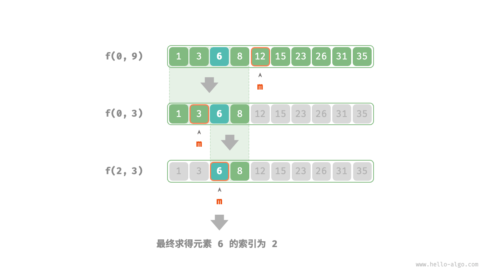
在实现代码中，我们声明一个递归函数 dfs() 来求解问题 $f(i, j)$ ：
|
|
构建二叉树问题
问题：给定一棵二叉树的前序遍历
preorder和中序遍历inorder，请从中构建二叉树，返回二叉树的根节点。假设二叉树中没有值重复的节点（如图 12-5 所示）。

判断是否为分治问题¶
原问题定义为从 preorder 和 inorder 构建二叉树，是一个典型的分治问题。
- 问题可以分解：从分治的角度切入，我们可以将原问题划分为两个子问题：构建左子树、构建右子树，加上一步操作：初始化根节点。而对于每棵子树（子问题），我们仍然可以复用以上划分方法，将其划分为更小的子树（子问题），直至达到最小子问题（空子树）时终止。
- 子问题是独立的：左子树和右子树是相互独立的，它们之间没有交集。在构建左子树时，我们只需关注中序遍历和前序遍历中与左子树对应的部分。右子树同理。
- 子问题的解可以合并：一旦得到了左子树和右子树（子问题的解），我们就可以将它们链接到根节点上，得到原问题的解。
如何划分子树¶
根据以上分析，这道题可以使用分治来求解，但如何通过前序遍历 preorder 和中序遍历 inorder 来划分左子树和右子树呢？
根据定义，preorder 和 inorder 都可以划分为三个部分。
- 前序遍历：
[ 根节点 | 左子树 | 右子树 ]，例如图 12-5 的树对应[ 3 | 9 | 2 1 7 ]。 - 中序遍历：
[ 左子树 | 根节点 ｜ 右子树 ]，例如图 12-5 的树对应[ 9 | 3 | 1 2 7 ]。
以上图数据为例，我们可以通过图 12-6 所示的步骤得到划分结果。
- 前序遍历的首元素 3 是根节点的值。
- 查找根节点 3 在
inorder中的索引，利用该索引可将inorder划分为[ 9 | 3 ｜ 1 2 7 ]。 - 根据
inorder的划分结果，易得左子树和右子树的节点数量分别为 1 和 3 ，从而可将preorder划分为[ 3 | 9 | 2 1 7 ]。

基于变量描述子树区间¶
根据以上划分方法，我们已经得到根节点、左子树、右子树在 preorder 和 inorder 中的索引区间。而为了描述这些索引区间，我们需要借助几个指针变量。
- 将当前树的根节点在
preorder中的索引记为 $i$ 。 - 将当前树的根节点在
inorder中的索引记为 $m$ 。 - 将当前树在
inorder中的索引区间记为 $[l, r]$ 。
如表 12-1 所示，通过以上变量即可表示根节点在 preorder 中的索引，以及子树在 inorder 中的索引区间。
表 12-1 根节点和子树在前序遍历和中序遍历中的索引
根节点在 preorder 中的索引 |
子树在 inorder 中的索引区间 |
|
|---|---|---|
| 当前树 | $i$ | $[l, r]$ |
| 左子树 | $i + 1$ | $[l, m-1]$ |
| 右子树 | $i + 1 + (m - l)$ | $[m+1, r]$ |
请注意，右子树根节点索引中的 $(m-l)$ 的含义是“左子树的节点数量”，建议结合图 12-7 理解。
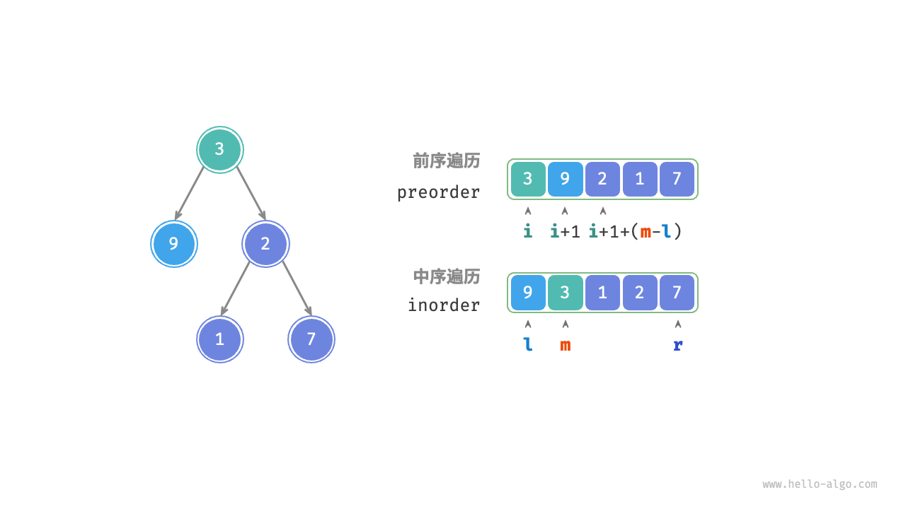
代码实现¶
为了提升查询 $m$ 的效率，我们借助一个哈希表 hmap 来存储数组 inorder 中元素到索引的映射：
|
|
图 12-8 展示了构建二叉树的递归过程，各个节点是在向下“递”的过程中建立的，而各条边（引用）是在向上“归”的过程中建立的。
 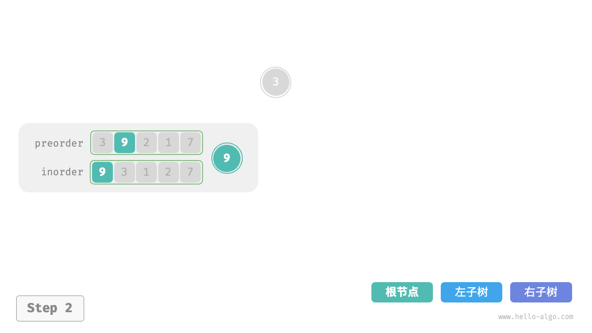
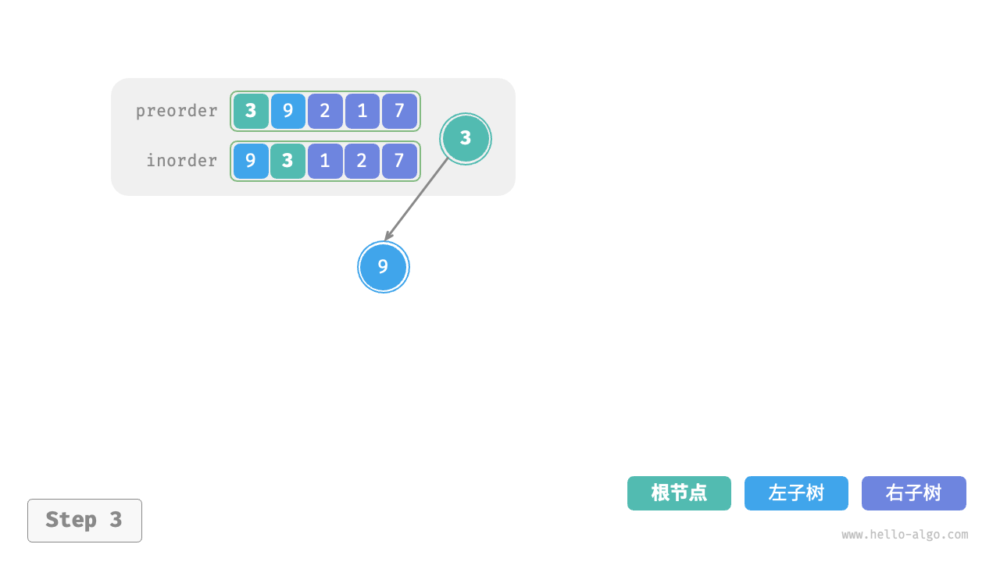
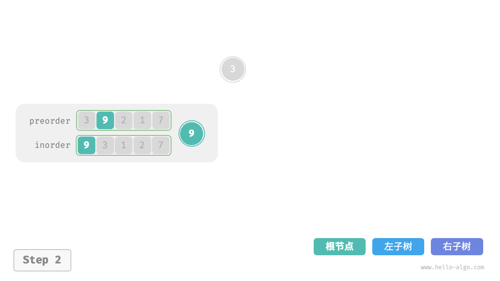
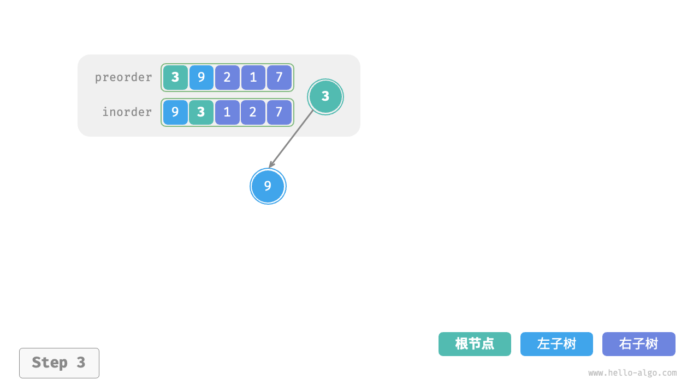


每个递归函数内的前序遍历 preorder 和中序遍历 inorder 的划分结果如图 12-9 所示。

设树的节点数量为 𝑛 ，初始化每一个节点（执行一个递归函数 dfs() ）使用 𝑂(1) 时间。因此总体时间复杂度为 𝑂(𝑛) 。
哈希表存储 inorder 元素到索引的映射，空间复杂度为 𝑂(𝑛) 。在最差情况下，即二叉树退化为链表时，递归深度达到 𝑛 ，使用 𝑂(𝑛) 的栈帧空间。因此总体空间复杂度为 𝑂(𝑛) 。
汉诺塔问题
在归并排序和构建二叉树中，我们都是将原问题分解为两个规模为原问题一半的子问题。然而对于汉诺塔问题，我们采用不同的分解策略。
问题：
给定三根柱子，记为
A、B和C。起始状态下，柱子A上套着 𝑛 个圆盘，它们从上到下按照从小到大的顺序排列。我们的任务是要把这 𝑛 个圆盘移到柱子C上，并保持它们的原有顺序不变（如图 12-10 所示）。在移动圆盘的过程中，需要遵守以下规则。
- 圆盘只能从一根柱子顶部拿出，从另一根柱子顶部放入。
- 每次只能移动一个圆盘。
- 小圆盘必须时刻位于大圆盘之上。
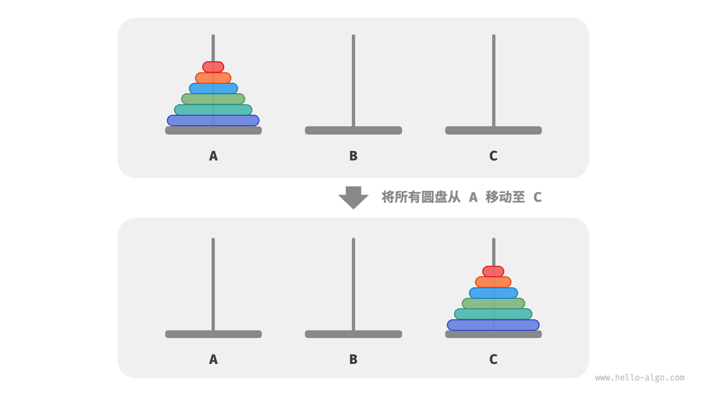
我们将规模为 𝑖 的汉诺塔问题记作 𝑓(𝑖) 。例如 𝑓(3) 代表将 3 个圆盘从 A 移动至 C 的汉诺塔问题。
考虑基本情况
如图 12-11 所示，对于问题 𝑓(1) ，即当只有一个圆盘时，我们将它直接从 A 移动至 C 即可。

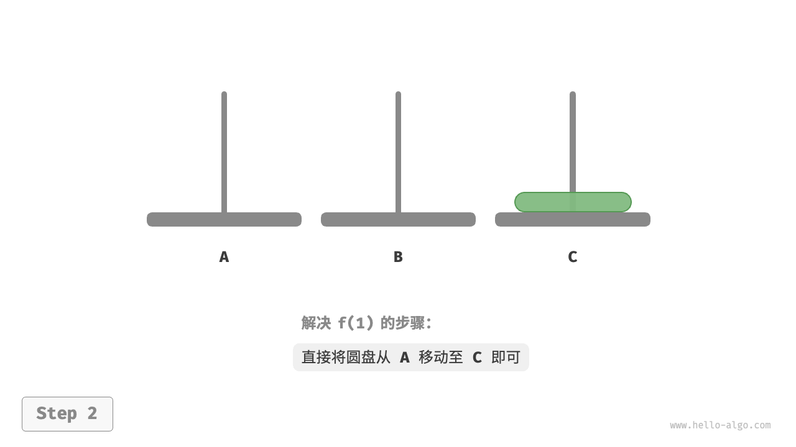
如图 12-12 所示，对于问题 𝑓(2) ，即当有两个圆盘时，由于要时刻满足小圆盘在大圆盘之上，因此需要借助 B 来完成移动。
- 先将上面的小圆盘从
A移至B。 - 再将大圆盘从
A移至C。 - 最后将小圆盘从
B移至C。

 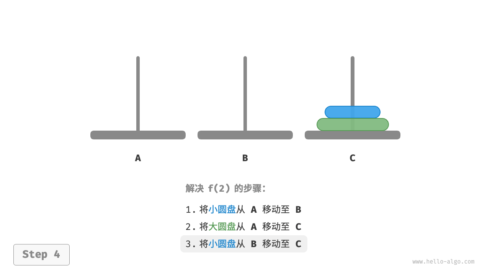
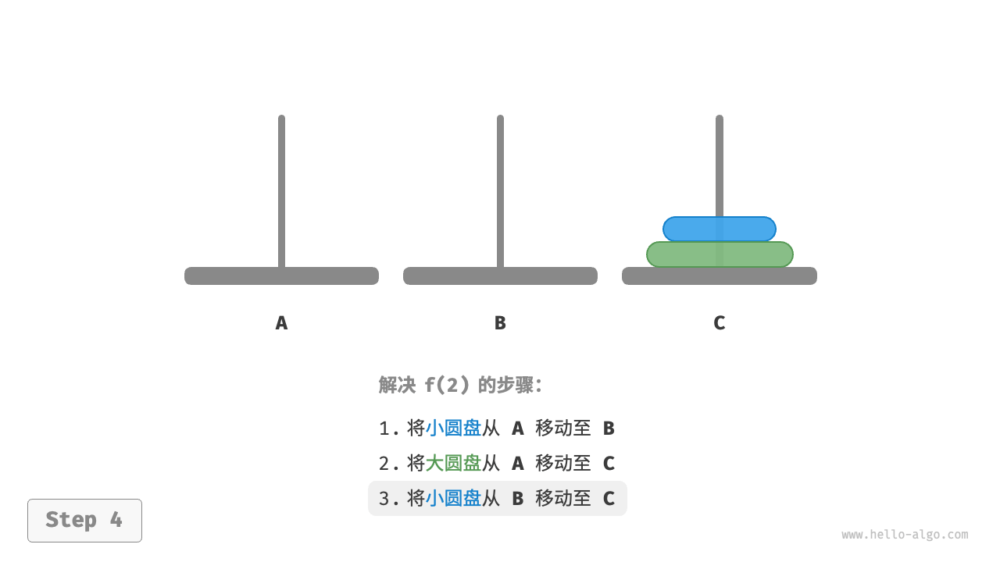
解决问题 𝑓(2) 的过程可总结为：将两个圆盘借助 B 从 A 移至 C 。其中，C 称为目标柱、B 称为缓冲柱。
子问题分解
对于问题 𝑓(3) ，即当有三个圆盘时，情况变得稍微复杂了一些。
因为已知 𝑓(1) 和 𝑓(2) 的解，所以我们可从分治角度思考，将 A 顶部的两个圆盘看作一个整体，执行图 12-13 所示的步骤。这样三个圆盘就被顺利地从 A 移至 C 了。
- 令
B为目标柱、C为缓冲柱，将两个圆盘从A移至B。 - 将
A中剩余的一个圆盘从A直接移动至C。 - 令
C为目标柱、A为缓冲柱，将两个圆盘从B移至C。
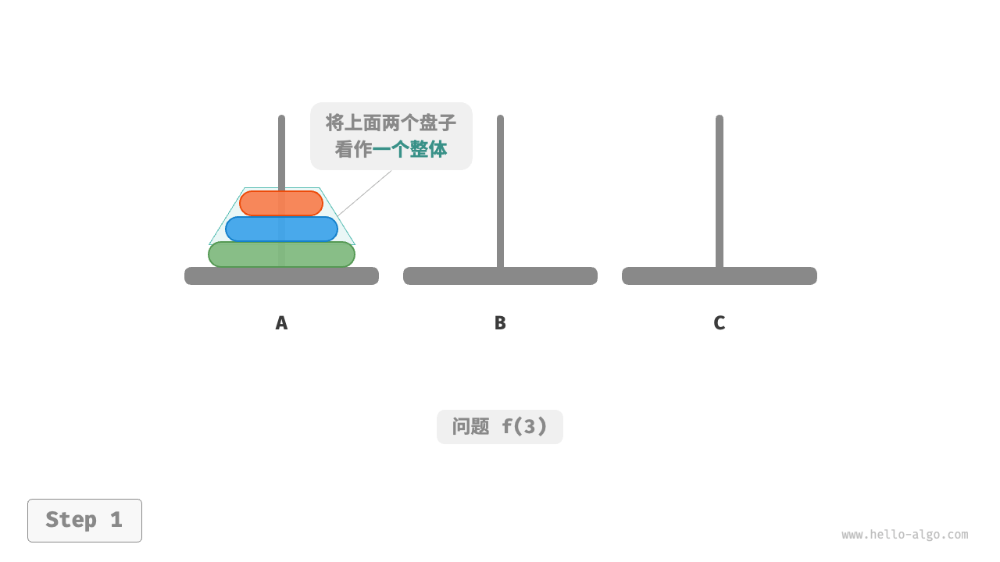
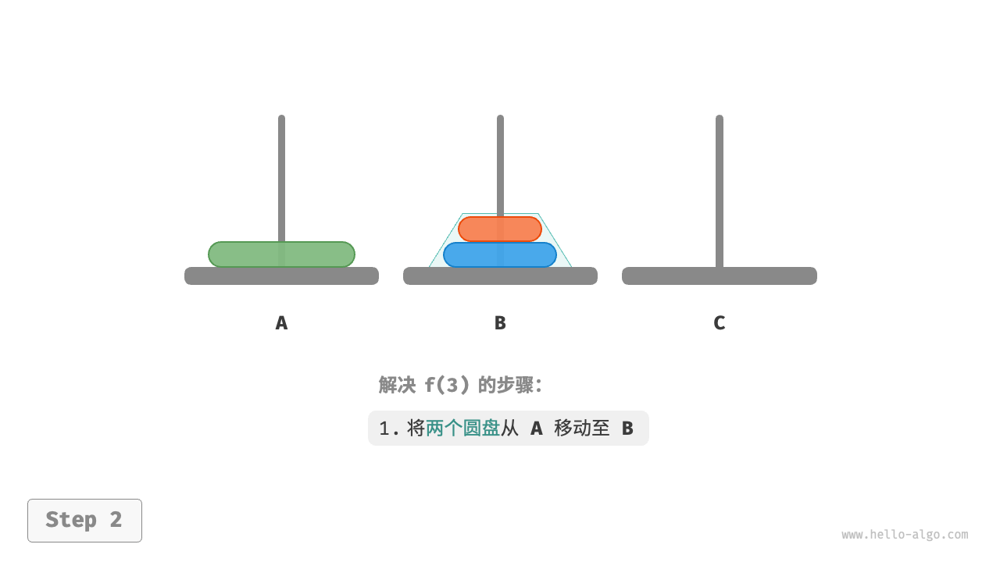

从本质上看，我们将问题 𝑓(3) 划分为两个子问题 𝑓(2) 和一个子问题 𝑓(1) 。按顺序解决这三个子问题之后，原问题随之得到解决。这说明子问题是独立的，而且解可以合并。
至此，我们可总结出图 12-14 所示的解决汉诺塔问题的分治策略：将原问题 𝑓(𝑛) 划分为两个子问题 𝑓(𝑛−1) 和一个子问题 𝑓(1) ，并按照以下顺序解决这三个子问题。
- 将 𝑛−1 个圆盘借助
C从A移至B。 - 将剩余 1 个圆盘从
A直接移至C。 - 将 𝑛−1 个圆盘借助
A从B移至C。
对于这两个子问题 𝑓(𝑛−1) ，可以通过相同的方式进行递归划分，直至达到最小子问题 𝑓(1) 。而 𝑓(1) 的解是已知的，只需一次移动操作即可。

代码实现
在代码中，我们声明一个递归函数 dfs(i, src, buf, tar) ，它的作用是将柱 src 顶部的 𝑖 个圆盘借助缓冲柱 buf 移动至目标柱 tar ：
|
|
如图 12-15 所示，汉诺塔问题形成一棵高度为 𝑛 的递归树，每个节点代表一个子问题，对应一个开启的 dfs() 函数，因此时间复杂度为 $𝑂(2^𝑛)$ ，空间复杂度为 𝑂(𝑛) 。
汉诺塔问题源自一个古老的传说。在古印度的一个寺庙里，僧侣们有三根高大的钻石柱子，以及 64 个大小不一的金圆盘。僧侣们不断地移动圆盘，他们相信在最后一个圆盘被正确放置的那一刻，这个世界就会结束。
然而，即使僧侣们每秒钟移动一次，总共需要大约 $2^{64}≈1.84×10^{19}$ 秒，合约 5850 亿年，远远超过了现在对宇宙年龄的估计。所以，倘若这个传说是真的，我们应该不需要担心世界末日的到来。
小结
- 分治是一种常见的算法设计策略，包括分（划分）和治（合并）两个阶段，通常基于递归实现。
- 判断是否是分治算法问题的依据包括：问题能否分解、子问题是否独立、子问题能否合并。
- 归并排序是分治策略的典型应用，其递归地将数组划分为等长的两个子数组，直到只剩一个元素时开始逐层合并，从而完成排序。
- 引入分治策略往往可以提升算法效率。一方面，分治策略减少了操作数量；另一方面，分治后有利于系统的并行优化。
- 分治既可以解决许多算法问题，也广泛应用于数据结构与算法设计中，处处可见其身影。
- 相较于暴力搜索，自适应搜索效率更高。时间复杂度为 𝑂(log𝑛) 的搜索算法通常是基于分治策略实现的。
- 二分查找是分治策略的另一个典型应用，它不包含将子问题的解进行合并的步骤。我们可以通过递归分治实现二分查找。
- 在构建二叉树的问题中，构建树（原问题）可以划分为构建左子树和右子树（子问题），这可以通过划分前序遍历和中序遍历的索引区间来实现。
- 在汉诺塔问题中，一个规模为 𝑛 的问题可以划分为两个规模为 𝑛−1 的子问题和一个规模为 1 的子问题。按顺序解决这三个子问题后，原问题随之得到解决。